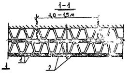

ВЕДОМСТВЕННЫЕ СТРОИТЕЛЬНЫЕ НОРМЫ
ИНСТРУКЦИЯ
ПО ТЕХНОЛОГИИ ПРИМЕНЕНИЯ ТКАНЫХ
И НЕТКАНЫХ ПОЛИМЕРНЫХ ФИЛЬТРУЮЩИХ
ОБОЛОЧЕК ДЛЯ ЗАЩИТЫ ПОДЗЕМНЫХ ЧАСТЕЙ
ЗДАНИЙ И СООРУЖЕНИЙ ОТ ПОДТОПЛЕНИЯ
ГРУНТОВЫМИ ВОДАМИ
ВСН 239-88
ОРДЕНА ЛЕНИНА
ПРОЕКТНО-СТРОИТЕЛЬНОЕ ОБЪЕДИНЕНИЕ МОССТРОЙ
ВЕДОМСТВЕННЫЕ СТРОИТЕЛЬНЫЕ НОРМЫ
ИНСТРУКЦИЯ
ПО ТЕХНОЛОГИИ ПРИМЕНЕНИЯ ТКАНЫХ И
НЕТКАНЫХ
ПОЛИМЕРНЫХ ФИЛЬТРУЮЩИХ ОБОЛОЧЕК ДЛЯ ЗАЩИТЫ
ПОДЗЕМНЫХ ЧАСТЕЙ ЗДАНИЙ И СООРУЖЕНИЙ ОТ
ПОДТОПЛЕНИЯ ГРУНТОВЫМИ ВОДАМИ
ВСН 239-88
ОРДЕНА ЛЕНИНА ПРОЕКТНО-СТРОИТЕЛЬНОЕ ОБЪЕДИНЕНИЕ МОССТРОЙ
«Инструкция» разработана лабораторией подземных сооружений НИИМосстроя (зав. лабораторией канд. техн. наук Б. В. Ляпидевский, канд. геолого-минералогических наук А. Н. Огильви, канд. техн. наук А. Ф. Ландер, ст. научн. сотрудник Л. В. Мельникова, мл. научн. сотр. С. А. Фрог).
Согласована с Управлением подготовки производства ПСО Мосстрой, Управлением Моспроект-1, ВНИИР, ВНИИ Водгео, ЦК профсоюза рабочих строительства и промстройматериалов.
Утверждена Техническим управлением ПСО Мосстрой.
|
Мосстройкомитет Проектно-строительное объединение Мосстрой Техническое управление |
Ведомственные строительные нормы |
ВСН 239-88 Вводятся впервые |
|
Инструкция по технологии применения тканых и нетканых полимерных фильтрующих оболочек для защиты подземных частей зданий и сооружений от подтопления грунтовыми водами |
1.1. Настоящая инструкция предназначена для проектирования и строительства пристенных дренажей подвальных помещений зданий и подземных сооружений с использованием дренажной оболочки из полимерных материалов «Дрениз».
Дренажная оболочка заменяет обмазочную и оклеечную гидроизоляцию.
1.2. Дренажная оболочка «Дрениз» может применяться при всех типах грунтовых вод.
1.3. Дренажная оболочка из полимерных материалов «Дрениз» должна отвечать техническим требованиям, приведенным в разделе 2 настоящей инструкции.
1.4. При проектировании дренажей следует руководствоваться типовыми схемами, приведенными в разделе 3.
1.5. Дренажная оболочка «Дрениз» поставляется совместно с полотнами нетканого фильтрующего материала размером 150 ´ 2000 мм, который защищает ее верхнюю кромку от попадания грунта (п. 3.4).
1.6. Строительно-монтажные работы по устройству пристенного дренажа с применением оболочки «Дрениз» должны выполняться в соответствии с проектом, общими правилами производства и приемки работ и требованиями настоящей инструкции.
|
Внесены |
Утверждены |
Срок введения в действие с 17.02.89 г. |
2.1. Дренажная оболочка «Дрениз» применяется для выполнения пристенного дренажа с глубиной заложения до 8 м.
Дренажная оболочка должна выдерживать нагрузку 0,15 МПа до смятия гофр при скорости 0,05 мм/мин.
2.2. Водоотводящая способность дренажной оболочки должна быть не менее 1 л/с на 1 м.
2.3. Оболочка «Дрениз» изготавливается из гофрированного полиэтиленового листа и нетканого полимерного фильтрующего материала, скрепляемых между собой с помощью сварки.
2.4. Материалы, применяемые для изготовления дренажных элементов, должны удовлетворять требованиям следующих документов:
полиэтилен высокого давления - ГОСТ 16337-77Е;
полотно иглопробивное геотекстильное поверхностной плотностью 400-500 г/м2 - ТУ 63.070 оп 52-87 (III вариант).
Для изготовления гофрированного полиэтиленового листа и фильтрующего материала допускается использовать:
- лист из вторичного полиэтилена - ТУ 6-19-198-82;
- иглопробивной полиакрилонитрильный материал - ТУ 17-14-101-79, поверхностной плотностью 400-450 г/м2;
- термоскрепленный полипропиленовый материал типа «Тайпар» поверхностной плотностью 100-150 г/м.
2.5. Листы оболочки «Дрениз» должны иметь размеры, приведенные в табл. 1, на рис. 1.
Таблица 1
|
Начальная толщина листа d, мм |
Размеры гофр, мм |
Поверхностная плотность геотекстиля, г/м2 |
Размеры дренажной оболочки*, м |
|||||
|
а |
в |
с |
h |
ширина |
длина |
|||
|
Гофрированный полиэтиленовый лист |
2 ± 0,3 |
5 |
3 |
3 |
10 |
|||
|
Полимерный фильтрующий материал |
450±50 |
1,1 |
³2 |
|||||
*) Определяются возможностями технологического оборудования
2.6. Допускаемые отклонения от размеров листов дренажной оболочки не должны превышать, мм:
по длине - ±20;
по ширине - ±5;
по толщине - ±1;
2.7. Прочность гофрированного полиэтиленового листа на сжатие (до момента смятия гофр) должна быть не менее 0,15 МПа
Рис. 1. Материал «Дрениз»:
1 - фильтрующий материал
2 - гофрированный полиэтиленовый лист
2.8. Водонепроницаемость нетканого фильтрующего материала должна быть не менее 100 м/сут.
2.9. Прочность на разрыв фильтрующего материала должна быть не менее 4500 Н/м.
2.10. Минимально допустимый диаметр стержня, на котором может гнуться «Дрениз» (при температуре 20°С) поперек гофр без нарушения их сплошности, составляет 20 см (применительно к ГОСТ 10296-79).
3.1. Дренажная оболочка «Дрениз» должна укладываться одновременно с трубчатыми дренами, отводящими воду с участка зданий и сооружений.
3.2. Листы «Дрениз» крепятся к стене здания (сооружения) в виде полос, которые обращены гофрированной частью к поверхности стены, фильтрующим материалом - к грунту засыпки. Водоотводящие каналы должны располагаться вертикально.
3.3. Крепление листов дренажной оболочки к стеке здания осуществляется точечной приклейкой битумом или другими клеющими средствами. Возможно крепление к стене при помощи дюбелей (рис. 2).
Рис. 2. Схема крепления дренажной оболочки
3.4. Листы дренажной оболочки соединяются друг с другом внахлест: верхняя горизонтальная полоса должна перекрывать нижнюю полосу, чтобы избежать попадания грунта во внутренние полости материала. Величина перекрытия горизонтальных швов не менее 10-15 см (рис. 3), вертикальных - до 15 см (рис. 4).

Рис 3. Шов дренажной оболочки «Дрениз» (горизонтальный):
1 - гофрированный полиэтиленовый лист
2 - фильтрующий материал
Рис 4. Шов дренажной оболочки «Дрениз» (вертикальный):
1 - гофрированный полиэтиленовый лист
2 - фильтрующий материал
3.5. При установке верхней полосы «Дрениза» нетканый фильтрующий материал должен перекрывать верхний торец полосы и заводиться на поверхность полимерного листа, обращенную к стене здания (рис. 5).
Рис 5. Заделка верхней кромки двенажной оболочки:
1 - полоса фильтрующего материала шириной 10 см; 2 - дренажная оболочка «Дрениз»; 3 - стена здания (сооружения)
3.6. При глубине заложения кольцевого дренажа до 5 м (рис. 6) и от 5 до 8 м (рис. 7) совместная работа «Дрениза» и дренажной трубы обеспечивается засыпкой песка с коэффициентом фильтрации более 5 м/сут. Уровень засыпки песком должен быть на 30 см выше верха дренажной трубы.
Рис 6. Конструкция пристенного дренажа глубиной заложения до 5 м:
1 - планировочная отметка; 2 - местный грунт; 3 - дренажная оболочка «Дрениз»; 4 - пол подвала; 5 - трубофильтр; 6 - песок с коэффициентом фильтрации 5 м/с
Рис 7. Конструкция пристенного дренажа глубиной заложения от 5 до 8 м:
1 - планировочная отметка; 2 - местный грунт; 3 - дренажная оболочка «Дрениз»; 4 - песок с коэффициентом фильтрации 5 м/сут.; 5 - пол подвала; 6 - асбестоцементная труба; 7 - гранитный щебень d = 3¸15 мм; 8 - песок d = 0,3¸1,5 мм; 9 - бетон марки 100
3.7. Верх оболочки «Дрениз» должен быть ниже планировочных отметок на 15-20 см.
3.8. На перекрытиях подземных сооружений гофры дренажной оболочки должны располагаться по уклону. Фильтрующий слой обращен к грунту засыпки.
3.9. Консольные части подземных конструкций должны покрываться снизу оболочкой «Дрениз» с целью предохранении их от капиллярной влаги. Гофры полиэтиленового листа могут располагаться параллельно углам конструкции.
3.10. Не допускается монтаж элементов дренажной конструкции в траншее, заполненной водой.
4.1. Обратная засыпка пазух котлованов или траншей производится после окончания работ по устройству дренажа с оболочкой «Дрениз», составления акта на скрытые работы и получения разрешения на засыпку.
4.2. Засыпка и уплотнение грунта ведется в соответствии со СНиП 3.02.01-87, «Технологическими указаниями по уплотнению грунта при обратной засыпке котлованов, траншей и пазух, строительству внутриквартальных дорог», разработанными НИИМосстроем и трестом Мосоргстрой в 1987 г. (арх. № 10759), и «Технологическими указаниями по уплотнению грунтов при обратной засыпке котлованов, траншей и пазух в зимнее время», разработанными трестом Мосоргстрой и НИИМосстроем в 1967 г. (арх. № 10901).
4.3. Засыпка пазух котлованов или траншей производится послойно экскаваторами, экскаваторами-планировщиками, бульдозерами. При этом толщина слоя отсыпаемого грунта вблизи дренажной оболочки «Дрениз» с учетом последующего уплотнения ручными трамбовками должна быть не более 25 см (рис. 8).
Рис 8. Уплотнение грунта при обратной засыпке пазух котлована или траншей:
1 - планировочная отметка; 2 - послойное уплотнение грунта ручными электротрамбовками; 3 - дренажная оболочка «Дрениз»; 4 - пол подвала; 5 - трубофильтр; 6 - песок с коэффициентом фильтрации 5 м/сут; 7 - послойное уплотнение грунта машинами и механизмами
4.4. Обратная засыпка дренажной оболочки «Дрениз» выполняется местным грунтом, который не должен содержать строительного мусора. Засыпка пазух котлована или траншей разжиженным или несвязным илистым грунтом не допускается.
4.5. В зимнее время обратная засыпка дренажной оболочки «Дрениз» осуществляется только талым грунтом.
4.6. Грунт при обратной засыпке уплотняется вручную электротрамбовками типа ИЭ-4505 и ИЭ-4502 на расстоянии не менее 40 см от вертикально уложенной дренажной оболочки «Дрениз» и на высоте не менее 30 см над горизонтально уложенной дренажной оболочкой «Дрениз».
Уплотнение зон, примыкающих к краям откоса, осуществляется гидромолотами типа СП-62, СП-71 «Рамер», виброплитами И-16, И-315, И-50 или другими машинами и механизмами, мощность удара рабочего органа которых не более 8800 Дж (900 кгс×м).
4.7. При обратной засыпке и уплотнении грунта в пазухах котлована или траншеи должны быть приняты меры против повреждения дренажной оболочки «Дрениз».
5.1. Приемка пристенного дренажа с использованием оболочек «Дрениз» в эксплуатацию производится в соответствии со СНиП 3.01.01-85.
5.2. Предъявляемый к сдаче в эксплуатацию пристенный дренаж должен соответствовать проекту и техническим требованиям, изложенным в разделе 3 настоящей инструкции.
5.3. В процессе устройства пристенного дренажа с применением оболочки «Дрениз» пооперационный контроль осуществляется производителем работ (мастером). Технический надзор производится автором проекта и заказчиком.
После выполнения пристенного дренажа составляется акт на скрытые работы.
5.4. Элементы дренажной оболочки «Дрениз» должны соответствовать техническим требованиям, изложенным в разделе 2 настоящей инструкции.
5.5. Каждая партия дренажных оболочек «Дрениз», отпускаемая заводом-изготовителем, должна быть снабжена паспортом установленной формы. Паспорта хранятся у производителя работ и предъявляются при составлении акта о сдаче дренажа в эксплуатацию.
5.6. На листах дренажной оболочки «Дрениз» не допускаются: разрывы нетканого полотна; смятие гофр более 5 % от общего количества гофр листа; отслоение нетканого полотна от гофрированного листа на площади более 5 % от общей площади листа.
5.7. Дренажные оболочки поставляются на объект строительства в виде листов, уложенных в стопу массой не более 40 кг с деревянными прокладками через каждые 3 листа. Стопа должна быть уложена на подкладки и скреплена стальной лентой по ГОСТ 3560-73*.
5.8. Дренажные оболочки «Дрениз» хранятся в горизонтальном положении в условиях, исключающих воздействие прямого солнечного света. Должны быть приняты меры против их загрязнения.
5.9. При хранении оболочек в штабелях количество стоп в штабеле не должно превышать 3.
5.10. Погрузку и разгрузку дренажных оболочек производят вручную или подъемными кранами с соблюдением мер, исключающих возможность их повреждения.
6.1. При производстве строительно-монтажных работ необходимо выполнять требования СНиП III-4-80 «Техника безопасности в строительстве», включая изменения от 23.IV.84 № 56, «Инструкция по технике безопасности для рабочих, выполняющих работы нулевого цикла», выпущенной в 1982 г.
6.2. При монтаже листов оболочки «Дрениз» необходимо выполнять требования «Инструкции по технике безопасности при работе с монтажным поршневым пистолетом ПЦ-52-1» (ВСН 191-83).
СОДЕРЖАНИЕ